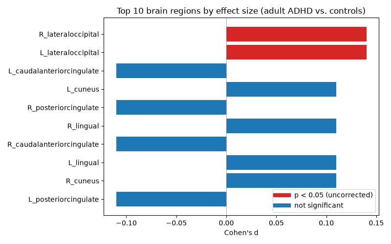

This reproduces case-control cortical thickness effect sizes from the ENIGMA-ADHD Working Group (Hoogman et al., 2017, Lancet Psychiatry), using publicly available summary statistics.

Each bar shows Cohen's d for cortical thickness differences between ADHD patients and controls in adults. Positive values mean thicker cortex in ADHD; negative means thinner.
Data source: ENIGMA Toolbox (MICA-MNI). Analysis code and full pipeline: this repository.